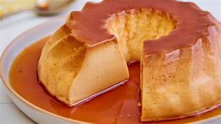

Flan Casero
Postre tradicional y fácil de preparar. Su textura cremosa y su caramelo dorado lo convierten en un favorito de todos.
Autor
Pedro Pascal

Pedro Pascal es un chef apasionado por la cocina creativa y la fusión de sabores. Con años de experiencia en reconocidos restaurantes internacionales, ha logrado combinar técnicas tradicionales con innovaciones modernas, creando platos que no solo sorprenden al paladar, sino que también cuentan historias.
Ingredientes
Para el Flan
- 4 huevos
- 500 ml de leche
- 100 g de azúcar
- Esencia de vainilla
- Azúcar para el caramelo
Receta
- Preparar el caramelo derritiendo azúcar en una sartén hasta que esté dorado.
- Volcar el caramelo en un molde y cubrir la base.
- Batir los huevos con el azúcar y la vainilla hasta integrar.
- Agregar la leche y mezclar suavemente.
- Verter la mezcla en el molde con caramelo.
- Cocinar a baño maría en horno medio por 50 minutos.
- Dejar enfriar y desmoldar.
- Servir con crema o dulce de leche.
Califica esta receta y deja tu opinión
Selecciona una calificación